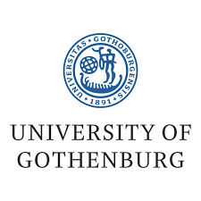
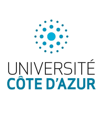
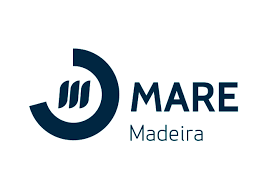
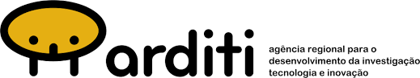
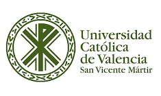

Marine Expeditions
Field expeditions have shaped the way I understand marine science. From biodiversity surveys and oceanographic campaigns to cetacean research and expedition logistics, these projects have strengthened my ability to operate in dynamic environments where science, safety and decision-making converge.

Tjärnö Bay Benthic Biodiversity Expedition

Research project investigating biodiversity patterns in natural and artificial benthic habitats.
Key Responsibilities
- Designed research objectives and methodologies.
- Processed biological and environmental samples.
- Identified benthic organisms using taxonomic keys.
- Coordinated sample collection and navigation.
- Conducted risk assessments and equipment management.
- Verified data quality and preliminary analysis.
- Presented findings to scientific peers.
Key Outcomes
- Complete research project.
- Scientific presentation.
- Final technical report.

Lérins Islands Marine Biodiversity Census

Marine biodiversity monitoring campaign assessing fish, invertebrate and macroalgal communities across different seasons.
Key Responsibilities
- Conducted underwater transects to record abundance and diversity.
- Identified species in situ following monitoring protocols.
- Recorded quantitative ecological datasets.
- Compared observations with historical biodiversity records.
- Assisted seasonal ecosystem assessments.
- Ensured underwater safety and methodological consistency.
Key Outcomes
- Biodiversity monitoring datasets.
- Seasonal ecosystem assessment.
- Scientific field experience in marine conservation.

Madeira Cetacean Field Operations


Field operations supporting cetacean ecology research and marine biotechnology projects.
Key Responsibilities
- Conducted more than 20 field expeditions.
- Collected over 50 cetacean photo-ID samples.
- Supported biological sampling campaigns.
- Maintained microalgae cultures.
- Operated sonar, echo sounders, pumps and incubators.
- Processed biological samples.
- Coordinated field and laboratory workflows.
- Supported scientific reporting.
Key Outcomes
- Cetacean monitoring datasets.
- Marine biotechnology support.
- International project coordination experience.

Mediterranean Oceanographic Campaigns

Multidisciplinary oceanographic surveys integrating biological, chemical, physical and geological data collection.
Key Responsibilities
- Conducted biological surveys.
- Identified marine fauna and macroalgae.
- Collected water samples using oceanographic equipment.
- Measured salinity, temperature and turbidity.
- Performed sediment sampling.
- Assessed coastal impacts and marine legislation implications.
- Integrated datasets into final reports.
Key Outcomes
- Multidisciplinary oceanographic assessments.
- Field experience across multiple oceanographic disciplines.
Core Competencies
Expedition Operations
Field logistics, sampling coordination, risk assessment, safety and decision-making in dynamic marine environments.
Project Coordination
Stakeholder communication, workflow management, international collaboration and multidisciplinary project delivery.
Ocean Innovation
Blue biotechnology, sustainability initiatives and innovation projects connecting science with real-world impact.